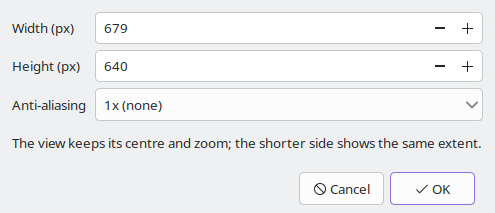

File > Save image as PNG (Ctrl+S) opens this dialog. It renders the view again at the size you ask for, so the picture is not limited to the window:
The view keeps its centre and zoom, and the shorter side of the picture shows the same extent as the shorter side of the window. The dialog stays open while you carry on navigating; press OK when the view is right, choose a file name, and a progress dialog shows the render, which you can cancel. The file is an 8-bit RGB PNG. The settings themselves are not stored in it: export a view file as well if you want to come back to the same place.
F1 inside the dialog opens this page.
File > Copy image (Ctrl+C) puts the picture as it is on screen onto the clipboard, at the screen's resolution. If a render is in progress you get the picture as far as it has got. If another program holds the clipboard the message "The clipboard is busy" appears; try again in a moment.